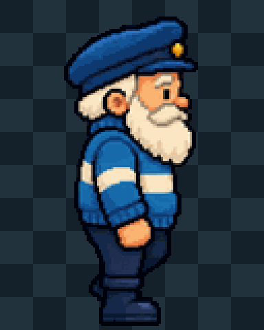
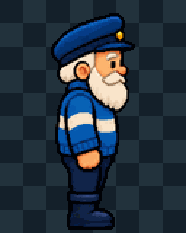
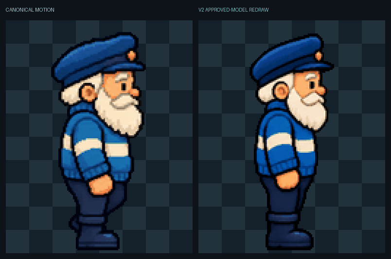
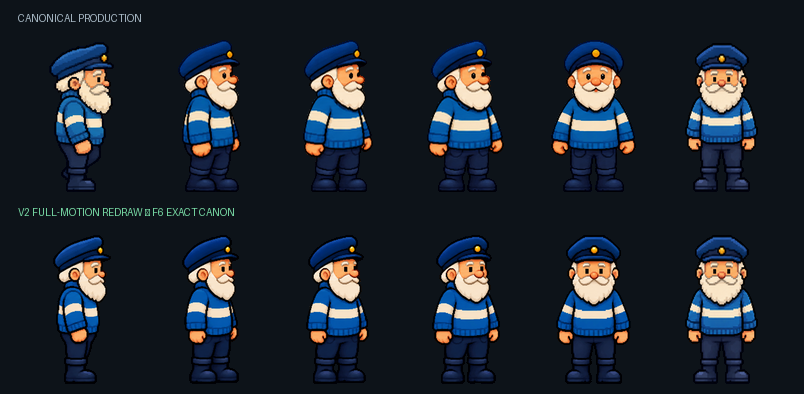
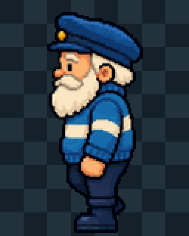
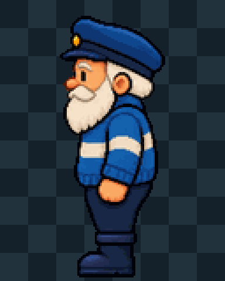
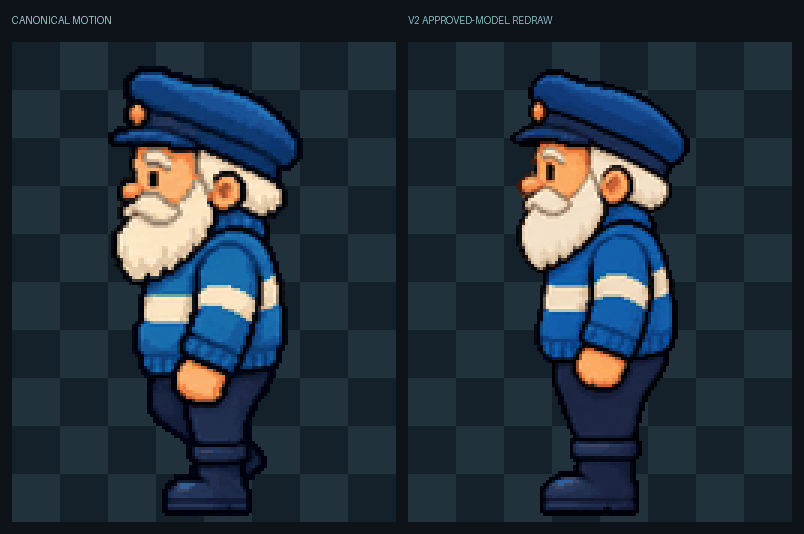
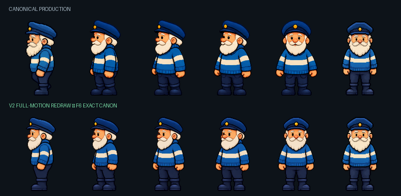

Canonical motion

Frames 1–5 redraw the approved Keeper as one continuous rotating model. Frame 6 is restored from the approved canon exactly. V1 remains rejected historical evidence.
Frames 1–5 are a full approved-model redraw. Frame 6 is exact canon. F5→F6 geometry: width Δ 2 px, height Δ 0 px, centre Δ 0.0 px, baseline Δ 0 px.




Canonical cab51cb946eb39e1a05e2665ccff7f0f3cb6523621d42a4766ccb8212d86b57b
V2 d2a5d162047591409ffed4aa364bc374fcd26ab1fad310c01c0ad769819456f6
Frames 1–5 are a full approved-model redraw. Frame 6 is exact canon. F5→F6 geometry: width Δ 1 px, height Δ 0 px, centre Δ 0.5 px, baseline Δ 0 px.




Canonical 7060620c5009a76e74dfa222c9f21bb6a33b6e49545b9a9c177539b2a6323599
V2 2366158eaddf9bc62d7856fde4731a3fee2189f6fa4a843568b3a00c7e8da155
Both strips preserve the 6-frame, 4fps, 32×40 logical-cell contract. Every cell has binary alpha and a transparent safety gutter. F6 is byte-identical to canon; F5 is constrained to the same baseline, centreline and height with no more than four source pixels of width difference. Nothing is promoted by this page.